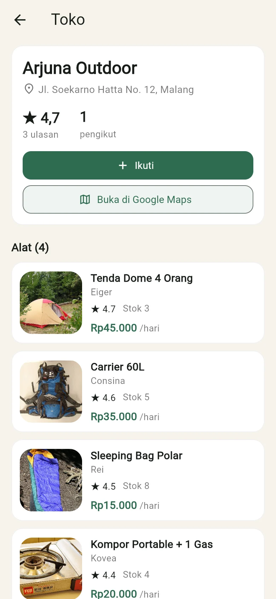

RentGear
Marketplace penyewaan alat hiking dan camping dengan stok terjadwal dan jaminan sewa
atau spasi untuk mulai mendaki
Filosofi logo
Dua puncak
Penyedia yang punya alat dan penyewa yang butuh alat, dipertemukan dalam satu aplikasi.
Garis dasar
Pijakan yang sama bagi keduanya: jadwal stok yang jelas dan jaminan sewa.
Matahari
Tujuan pendakian, yaitu tiba di puncak saat matahari terbit. Oranye yang sama dipakai untuk penanda status di aplikasi.
Warna
Hijau hutanOranye puncakPutih pasir
Usaha sewa alat ramai, pengelolaannya masih manual
Kemungkinan terjadi, skala 1 sampai 5. Empat dari 18 risiko yang dinilai. Sumber: Ramadhan dkk. (2025), doi.org/10.63822/96j19572
- Rp 5 sampai 8 juta
omzet per bulan satu rental alat mendaki di Jakarta Utara. Pemiliknya membuka rental itu setelah batal mendaki karena alat di tempat sewa tidak tersedia.
detikFinance, 28 April 2018, finance.detik.com/solusiukm/d-3995862
- WhatsApp dan spreadsheet
Di satu perusahaan sewa alat camping, pesanan masuk lewat WhatsApp dan dicatat di Google Spreadsheet. Saat ramai datanya rangkap atau hilang, dan stok sulit dicek.
Nurjanah dkk., IMPROVE 17(1), 2025, ejurnal.ulbi.ac.id/index.php/improve/article/view/4217
Intinya: alat mendaki mahal, jadi orang menyewa dan usaha sewanya hidup. Masalahnya ada di pengelolaan: catatan manual, stok yang tidak bisa dicek dari jauh, dan alat yang telat kembali.
Sudah datang ke toko, alatnya belum tentu ada
-
Opak Adventure
Kabupaten Pekalongan, 2019Pelanggan harus datang langsung, tetapi alat belum tentu tersedia karena pengembalian sering terlambat.
Musta Dwi N., Khambali, dan Wicaksono, Surya Informatika 7(1), jurnal.umpp.ac.id/index.php/surya_informatika/article/view/379
-
Dahlia Adventure
Kota Pekalongan, 2023Pelanggan diharuskan datang langsung, dan biasanya alat masih dipakai pelanggan lain.
Artanto dan Musta Dwi, SATESI 3(1), doi.org/10.54259/satesi.v3i1.1472
-
EX Adventure Solo
Surakarta, 2021Penyewa datang dulu hanya untuk tahu barangnya ada atau tidak. Pesanan dicatat di buku.
Pambudi, Universitas Muhammadiyah Surakarta, eprints.ums.ac.id/90197
Intinya: di tiga toko ini penyewa baru tahu stok setelah sampai di toko. Dengan RentGear, ketersediaan pada tanggal yang dipilih bisa dicek dari HP sebelum berangkat.
Menyewa alat hiking masih lewat chat dan buku catatan
-
Penyewa harus menanyakan ketersediaan ke tiap toko. Jawabannya sering baru datang setelah tanggal itu diambil orang lain.
-
Penyedia mencatat pesanan di buku atau chat. Dua pesanan untuk tenda yang sama di tanggal yang sama mudah lolos.
-
Alat dibawa berhari-hari tanpa pegangan bagi penyedia, dan tanpa catatan status yang bisa dilihat kedua pihak.
Toko pertama
Kak, tenda 4 orang tanggal 14 sampai 15 ada?
Maaf kak, sudah dibooking.
Toko kedua
Kak, tenda 4 orang tanggal 14 sampai 15 ada?
Sebentar ya kak, saya cek buku dulu.
Buku pesanan
Tenda Dome 4P: stok 1 unit
- 14 OktCarrier 60LSinta
- 14 OktTenda Dome 4PAndi
- 15 OktKomporYoga
- 14 OktTenda Dome 4PRaka
Tenda Dome 4P, 3 hari
Rumusan masalah
- 1
Bagaimana penyewa bisa mengetahui alat yang tersedia pada tanggal yang diminta tanpa bertanya ke tiap toko?
- 2
Bagaimana sistem mencegah satu alat dipesan dobel ketika stoknya terbatas?
- 3
Bagaimana penyedia mendapat jaminan dan catatan status yang jelas sejak booking sampai alat kembali?
Tujuan dan manfaat
Tujuan
- 1
Membuat katalog alat dari beberapa penyedia dengan pengecekan stok per tanggal.
- 2
Menerapkan algoritma ketersediaan yang menghitung puncak pemakaian stok, sehingga booking yang melebihi stok ditolak.
- 3
Menerapkan jaminan dokumen dan alur status transaksi yang tercatat dari booking sampai selesai.
Manfaat
PenyewaTahu stok dan total biaya sebelum memesan, lalu memantau status sewanya.
PenyediaPesanan tercatat, jadwal tidak bentrok, dan ada dokumen jaminan selama alat dipinjam.
AdminMemverifikasi penyedia dan memantau seluruh transaksi.
Yang baru dari RentGear
-
Stok dihitung per tanggal
Ketersediaan diambil dari puncak pemakaian pada rentang tanggal yang diminta. Booking yang melebihi stok ditolak sebelum tersimpan.
-
Jaminan mengunci alur sewa
Booking tidak bisa dikonfirmasi, alat tidak bisa diserahkan, dan transaksi tidak bisa selesai sebelum status jaminannya sesuai.
-
Banyak penyedia dalam satu katalog
Penelitian sistem sewa yang dikutip di latar belakang masing-masing dibuat untuk satu toko. RentGear menampung banyak penyedia yang diverifikasi admin.
Batasan masalah
Dikerjakan pada tahap ini
Aplikasi Flutter untuk Android dan web, dengan tiga peran pengguna.
Daftar toko dengan rating, ulasan, follow, dan lokasi Google Maps.
Booking, jaminan dokumen, dan alur status sampai selesai.
Pembayaran lewat transfer bank dengan unggah foto bukti transfer.
Denda keterlambatan dan kerusakan, serta blacklist penyewa.
Server Laravel dan MySQL. Aplikasi bisa memakai data di perangkat atau di server.
Dikerjakan setelah tahap ini
Fitur AI: rekomendasi paket alat dan pemeriksaan kondisi alat.
Login dengan akun Google, dan peta yang tertanam di aplikasi.
Payment gateway dan versi iOS.
Metode pengerjaan
Alat yang dipakai: Flutter dan Dart untuk aplikasi, Laravel dan MySQL untuk server.
Alur bisnis
Penyedia
Mendaftar, diverifikasi admin, lalu memasang alat, stok, dan harga sewa.
RentGear
Katalog bersama, jadwal stok, jaminan, dan status transaksi.
Penyewa
Memilih alat dan tanggal, mengirim jaminan, lalu mengambil alat di tempat penyedia.
Aliran uang saat ini
Penyewa mentransfer biaya sewa dan deposit langsung ke rekening penyedia, lalu mengunggah bukti transfer. Deposit kembali ke penyewa setelah alat dikembalikan.
Arah berikutnya
Pembayaran lewat payment gateway. Platform mengambil komisi dari tiap transaksi yang selesai dan meneruskan sisanya ke penyedia. Besaran komisi belum ditetapkan.
Tiga peran dalam aplikasi
Penyewa
- Memilih toko, mengikuti toko, dan mencari alat
- Booking dengan tanggal, ukuran, dan jaminan
- Mengunggah bukti transfer
- Memantau status, lalu memberi ulasan
Penyedia
- Mengelola alat, foto, dan stok per ukuran
- Mengatur dokumen jaminan yang diterima
- Memeriksa jaminan, lalu konfirmasi atau tolak
- Serah terima, terima pengembalian, dan mengisi denda
Admin
- Memverifikasi atau menolak penyedia baru
- Meninjau denda yang janggal dan mengelola blacklist penyewa
- Memantau dashboard: transaksi aktif, jaminan dipegang, nilai sewa
Alur status transaksi
Mencegah booking dobel
Tenda Dome 4 Orang, stok 2 unit
Keadaan awal
Stok tenda ini 2 unit. Booking A memakai 1 unit pada 1 sampai 2 Okt. Booking B memakai 1 unit pada 4 sampai 5 Okt.
Ada permintaan baru
1 tenda untuk 1 sampai 5 Okt. Diterima atau ditolak?
Cara yang keliru
Menghitung jumlah booking: A dan B ada 2, sama dengan stok, jadi stok dianggap habis. Padahal A dan B tidak pernah dipakai di hari yang sama.
Cara RentGear
Periksa hari demi hari, lalu ambil hari tersibuk. Paling banyak hanya 1 unit yang terpakai.
Diterima
sisa = stok − hari tersibuk
= 2 − 1 = 1 unit
Setiap hari masih ada 1 unit kosong, jadi permintaan baru masuk.
Permintaan berikutnya ditolak
1 tenda untuk 2 Okt. Hari itu 2 dari 2 unit sudah terpakai, sisanya 0. Aplikasi menolak sebelum booking tersimpan.
Intinya: yang dihitung hari tersibuk, bukan jumlah booking. Selama tiap hari yang diminta masih punya unit kosong, booking diterima.
Susunan aplikasi
- Layarlogin, penyewa, penyedia, admin, detail transaksi
- AppStatesesi login dan pembaruan tampilan
- Kontrak repositorydaftar operasi data yang boleh dipakai layar
- Repository lokal atau HTTPdipilih saat build; aturan stok, jaminan, dan status sama di keduanya
- Perangkat atau serverberkas JSON di HP, atau API Laravel dengan MySQL
Data yang disimpan
- Pengguna
- Profil penyedia
- Alat
- Stok per ukuran
- Transaksi sewa
- Jaminan
- Riwayat status
Mode server
Repository HTTP memakai API Laravel, sehingga booking dari satu HP muncul di HP penyedia. Kontraknya sama, jadi layar tidak diubah.
Hasil implementasi




Aplikasi dalam 24 detik
Pengujian
182dari 182
skenario tes otomatis lulus: 82 di aplikasi, 100 di server.
Tes otomatis adalah kode yang menjalankan aplikasi lalu memeriksa sendiri hasilnya. Dijalankan dengan flutter test dan php artisan test.
Aplikasi: sewa, stok, jaminan 23
Contoh: booking dobel ditolak, booking tanpa jaminan ditolak, NIK yang salah ditolak.
Aplikasi: denda, blacklist, toko, peta, audit 29
Contoh: telat 3 hari dihitung 1,5 kali tarif, rating toko adalah rata-rata ulasan.
Aplikasi: layar dan format 17
Contoh: halaman awal menampilkan toko, 45000 tampil sebagai Rp 45.000.
Aplikasi: sambungan ke server 13
Contoh: galat dari server tampil dengan pesan yang sama, server mati tidak membuat aplikasi macet.
Server: aturan inti 22
Kasus yang sama dengan tes aplikasi, untuk membuktikan dua sisi menghitung angka yang sama.
Server: API 78
Contoh: unit terakhir hanya jatuh ke satu booking, toko lain ditolak, foto KTP tidak bisa dibuka orang lain.
| Sewa lengkap: booking, konfirmasi, bukti transfer, serah terima, pengembalian | Lulus |
| Jaminan ditolak, booking ditolak, lalu stok bisa dipesan lagi | Lulus |
| Admin: dashboard, verifikasi penyedia, daftar transaksi | Lulus |
| Ukuran font sistem 1,3 kali, setelah 3 perbaikan tata letak | Lulus |
| Denda dan blacklist di HP: telat, rusak, keberatan penyewa, keputusan admin | Lulus |
| HP dan web lewat server: sewa lengkap sampai denda diputuskan admin | Lulus |
| Versi web pada lebar 390, 820, dan 1440 piksel | Lulus |
Intinya: tiap aturan penting punya tes sendiri. Kalau kode diubah dan aturannya rusak, tes langsung gagal. Uji di HP memastikan alurnya juga jalan di tangan pengguna.
Kesimpulan dan rencana lanjutan
Kesimpulan
- 1
Penyewa melihat katalog beberapa penyedia dan mengecek ketersediaan pada tanggal pilihannya di aplikasi.
- 2
Booking yang melebihi stok ditolak oleh algoritma puncak pemakaian. Tes otomatis untuk booking dobel lulus.
- 3
Setiap sewa memakai jaminan dokumen dan tercatat statusnya. Keterlambatan dan kerusakan dikenai denda yang dipotong dari deposit.
Rencana lanjutan
- Berikutnya
Fitur AI: rekomendasi paket alat dan pemeriksaan kondisi alat.
- Berikutnya
Login dengan akun Google.
- Menyusul
Peta yang tertanam di dalam aplikasi.
- Menyusul
Payment gateway dan versi iOS.
Sumber data
- Ramadhan, A. R., Fauzan, M. I., Hamid, Z. A., Ramdani, D. W., dan Djamil, B. U. (2025). Studi deskriptif mengenai manajemen risiko pada usaha penyewaan alat camping Lentera Camp di Bandung. Ekopedia: Jurnal Ilmiah Ekonomi, 1(4), 2413–2426. https://doi.org/10.63822/96j19572
- Laucereno, S. F. (28 April 2018). Raup omzet jutaan dari bisnis penyewaan alat mendaki gunung. detikFinance. https://finance.detik.com/solusiukm/d-3995862/raup-omzet-jutaan-dari-bisnis-penyewaan-alat-mendaki-gunung
- Nurjanah, D. S., Siska, Armiati, S., dan Mubassiran (2025). Perancangan Camply: sistem informasi penyewaan alat camping. IMPROVE, 17(1). https://ejurnal.ulbi.ac.id/index.php/improve/article/view/4217
- Musta Dwi N., N., Khambali, A., dan Wicaksono, T. A. (2019). Sistem informasi penyewaan alat outdoor pada Opak Adventure Kabupaten Pekalongan berbasis Android. Surya Informatika, 7(1), 44–51. https://jurnal.umpp.ac.id/index.php/surya_informatika/article/view/379
- Artanto, F. A., dan Musta Dwi, N. (2023). Sistem informasi penyewaan alat camping pada Dahlia Adventure Kota Pekalongan berbasis Android. SATESI, 3(1), 1–5. https://doi.org/10.54259/satesi.v3i1.1472
- Pambudi, H. G. S. (2021). Sistem informasi penyewaan alat outdoor berbasis web (studi kasus: EX Adventure Solo). Naskah publikasi, Universitas Muhammadiyah Surakarta. https://eprints.ums.ac.id/90197/
Terima kasih
Sesi tanya jawab